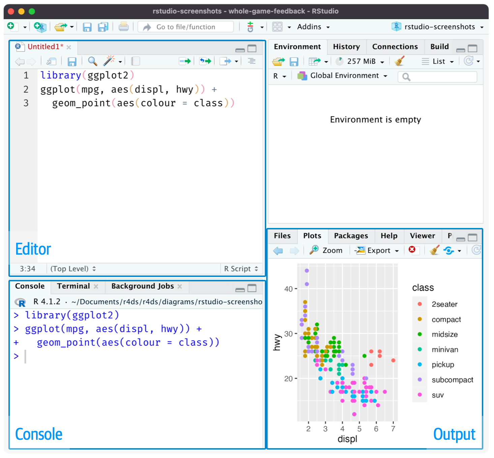
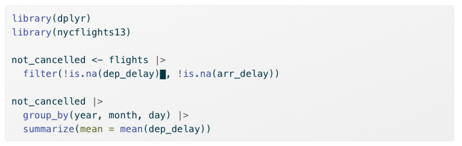

2 + 2[1] 4This appendix will walk you through installing R and RStudio, understanding the RStudio interface, and writing your first lines of R code. By the end of this chapter, you will be ready to start working with data and running econometric analyses.
To get started with R, you first need to download and install the base R software. R is available for free from CRAN (the Comprehensive R Archive Network). Navigate to https://cloud.r-project.org/ and click the download link for your operating system (Windows, macOS, or Linux). Follow the installation instructions provided for your system.
Once the installation is complete, you will have R installed on your computer. However, we will not typically interact with R directly. Instead, we will use RStudio, an integrated development environment (IDE) that makes working with R much more convenient.
RStudio is a powerful IDE designed specifically for working with R. It provides a user-friendly interface with helpful features like syntax highlighting, code completion, and integrated help documentation. You can download RStudio Desktop for free from https://posit.co/download/rstudio-desktop/. The website should automatically detect your operating system and show you the appropriate download link. Click the link and follow the installation instructions.
After installing both R and RStudio, you will only ever need to open RStudio. RStudio runs R in the background, so you don’t need to open the base R application separately. Feel free to delete the shortcut for base R from your desktop if you wish. When you open an R script file (.R) for the first time, be sure to set RStudio as the default program to open such files.
When you first open RStudio, you will see an interface divided into several panels (or “panes”), as seen in Figure A.1. Each panel serves a different purpose in your workflow. Understanding these panels is essential for working efficiently in R.

The Script Editor is where you write your R code in script files. A script file is simply a text file containing R code that can be saved, edited, and run again later. Working in script files is essential for reproducibility—you can always go back and see exactly what you did, make changes, and re-run your analysis. To open a new script file, go to File → New File → R Script, or use the keyboard shortcut Cmd+Shift+N (Mac) or Ctrl+Shift+N (Windows/Linux).
The Console is where R actually executes your code. When you run code from a script, it gets sent to the console line by line. You can also type code directly into the console and press Enter to run it immediately. However, code typed directly into the console is not saved, so this approach is generally only recommended for quick tests or exploratory work. Output from many functions, including regression results, will be printed to the console.
The Environment panel displays all the “objects” you have created in your current R session. These objects might include data frames, vectors, or stored values. You can see each object’s name along with a brief summary of its contents. This panel is useful for keeping track of what data and variables you currently have available.
This panel serves multiple purposes. When you create visualizations (like scatter plots or histograms), they will appear here. This panel also contains tabs for browsing files on your computer, viewing installed packages, and accessing R’s built-in help documentation.
You can hide or show different panels under the “View” menu. This is useful when you want more screen space for a particular task, such as focusing on your script while writing code.
Now that RStudio is set up, let’s write some code! We’ll start with simple operations in the console to get familiar with R’s syntax.
R can function as a sophisticated calculator. Try typing the following expressions in the console and pressing Enter:
2 + 2[1] 420 * 5 / 87[1] 1.149425sin(pi / 2)[1] 1sqrt(6)[1] 2.44949As you can see, R can handle basic arithmetic as well as mathematical functions like sin() and sqrt(). The pi you see in the third example is a built-in constant in R representing the mathematical constant \(\pi\).
R is an “object-oriented language,” meaning that data, variables, and nearly everything else is stored as an “object.” You create objects using the assignment operator <-. The assignment operator takes whatever is on the right side and stores it in the name on the left side.
x <- 2 + 5After running this code, the value 7 is now stored in an object called x. Notice that R didn’t print anything—it just stored the value. To see what’s stored in an object, type its name and press Enter:
x[1] 7You can use objects in subsequent calculations, just like variables in algebra:
x + 10[1] 17You can also update an object by reassigning it:
x <- x + 50
x[1] 57When creating object names, keep them short but descriptive. Object names cannot contain spaces. Some good examples include: flight_data, reg_controls_1, acs_male, or X_mat.
A vector is the simplest type of object in R. Vectors contain a sequence of values of the same type (all numbers, all text, etc.). You create vectors using the c() function, which stands for “combine”:
primes <- c(2, 3, 5, 7, 11, 13)
primes[1] 2 3 5 7 11 13One powerful feature of R is that arithmetic operations on vectors are applied element-by-element:
primes * 2[1] 4 6 10 14 22 26primes - 1[1] 1 2 4 6 10 12You can also perform arithmetic between two vectors of the same length:
odds <- c(1, 3, 5, 7, 9, 11)
primes + odds[1] 3 6 10 14 20 24R has a large collection of built-in functions that perform specific tasks. Functions are called using the syntax: function_name(argument1 = value1, argument2 = value2, ...).
For example, the seq() function generates a sequence of numbers:
bb <- seq(from = 1, to = 30, by = 3)
bb [1] 1 4 7 10 13 16 19 22 25 28Here, from, to, and by are the arguments of the function. We set from = 1 to start at 1, to = 30 to end at 30, and by = 3 to increment by 3.
To learn more about any function, type ? followed by the function name in the console. For example, ?seq will open the documentation for the seq() function.
Every piece of data in R has a type that determines how it can be used. Understanding data types is essential because certain operations only work with certain types, and R will sometimes convert between types automatically in ways that can cause unexpected results.
R has two main numeric types:
Integer (int): Whole numbers without decimal places. Created by adding L after a number:
my_integer <- 5L
typeof(my_integer)[1] "integer"Double (dbl): Numbers with decimal places (also called “floating point”). This is the default for most numbers:
my_double <- 5.7
typeof(my_double)[1] "double"In practice, the distinction between integers and doubles rarely matters for econometric analysis—R handles conversions automatically. When you see <int> or <dbl> in your data, both are simply “numbers.”
Character (chr): Text data, always enclosed in quotes:
my_name <- "Economics"
typeof(my_name)[1] "character"Character strings are used for labels, names, and categorical data that hasn’t been converted to a factor.
Logical (lgl): TRUE or FALSE values (can be abbreviated as T and F):
is_enrolled <- TRUE
typeof(is_enrolled)[1] "logical"Logical values are often created by comparisons:
5 > 3[1] TRUE10 == 10 # Note: == tests equality, = is for assignment[1] TRUELogical values are essential for filtering data (e.g., “keep only observations where income > 50000”).
Factor (fct): Categorical variables with a fixed set of possible values (called “levels”). Factors are crucial in regression because R treats them differently from numeric variables:
# Create a factor for education level
edu_level <- factor(c("High School", "College", "Graduate", "College", "High School"))
edu_level[1] High School College Graduate College High School
Levels: College Graduate High SchoolNotice how R shows the “Levels”—the complete set of possible categories. Factors are especially important for dummy variables in regression.
When you include a factor in a regression, R automatically creates dummy variables for each level. If you include a character variable, R may treat it as text rather than a categorical variable, leading to errors or unexpected results. We will talk more about this in section Chapter 7.
You can check an object’s type with typeof() or class():
class(edu_level)[1] "factor"Convert between types using as.numeric(), as.character(), as.factor(), etc.:
# Convert character to factor
major <- c("Economics", "Math", "Economics", "Physics")
major_factor <- as.factor(major)
major_factor[1] Economics Math Economics Physics
Levels: Economics Math Physics# Convert numeric to character
numbers <- c(1, 2, 3)
as.character(numbers)[1] "1" "2" "3"When working with data frames, you’ll frequently see these abbreviations:
| Abbreviation | Type | Description | Example |
|---|---|---|---|
<dbl> |
Double | Numbers with decimals | 3.14, 2.5 |
<int> |
Integer | Whole numbers | 1, 42 |
<chr> |
Character | Text strings | "hello", "NY" |
<fct> |
Factor | Categorical variable | factor("low", "med", "high") |
<lgl> |
Logical | TRUE/FALSE | TRUE, FALSE |
<date> |
Date | Calendar dates | as.Date("2024-01-15") |
Data frames are the primary way that structured, tabular data is stored in R. A data frame is essentially a table where each column is a vector and each row is an observation. R comes with several built-in data frames for practice, including mtcars, which contains data on various car models.
Use head() to view the first few rows of a data frame:
head(mtcars) mpg cyl disp hp drat wt qsec vs am gear carb
Mazda RX4 21.0 6 160 110 3.90 2.620 16.46 0 1 4 4
Mazda RX4 Wag 21.0 6 160 110 3.90 2.875 17.02 0 1 4 4
Datsun 710 22.8 4 108 93 3.85 2.320 18.61 1 1 4 1
Hornet 4 Drive 21.4 6 258 110 3.08 3.215 19.44 1 0 3 1
Hornet Sportabout 18.7 8 360 175 3.15 3.440 17.02 0 0 3 2
Valiant 18.1 6 225 105 2.76 3.460 20.22 1 0 3 1You can explore the structure of a data frame using several helpful functions:
nrow(mtcars)[1] 32ncol(mtcars)[1] 11colnames(mtcars) [1] "mpg" "cyl" "disp" "hp" "drat" "wt" "qsec" "vs" "am" "gear"
[11] "carb"To access a specific column (variable) within a data frame, use the $ operator:
head(mtcars$mpg)[1] 21.0 21.0 22.8 21.4 18.7 18.1Here, mtcars$mpg extracts the mpg column from the mtcars data frame as a vector. I wrapped it in head() to show only the first few values.
While the console is useful for quick tests, you should do the vast majority of your work in script files. Scripts allow you to save your code, edit it easily, and reproduce your entire analysis by running the script from top to bottom.
To create a new script, go to File → New File → R Script (or use Cmd/Ctrl + Shift + N). Write your code in the script editor, then use the following keyboard shortcuts to run it:
Cmd/Ctrl + Enter executes the current line (or highlighted selection) in the console. The cursor then automatically moves to the next line, making it easy to step through your code line by line.
not_cancelled object, then move the cursor to the next statement.

Cmd/Ctrl + Shift + S runs the entire script from top to bottom. This is useful for checking that your complete analysis works correctly and produces reproducible results.
Following good practices when writing scripts will save you time and frustration. Always start your script with your name and a brief description of the script’s purpose in comments. Load all required packages at the beginning of the script using library() so anyone reading your code knows what dependencies are needed. Never include install.packages() in your script—you only need to install packages once on your computer, and you don’t want your script to install packages on someone else’s machine without their permission. Save your scripts with short, descriptive names that contain no spaces, such as assignment_3.R or ec_325_data_plotting.R.
R uses a concept called the “working directory”—the folder on your computer where R looks for files you want to load and where it saves files you create. You can see your current working directory at the top of the console, or by running:
getwd()A good workflow is to save your R script in a dedicated folder for this course (or a subfolder for each week’s work), put all related data files in the same folder, and then set your working directory to that location. In RStudio, go to Session → Set Working Directory → To Source File Location to automatically set the working directory to wherever your script is saved.
R comes with a set of “base” packages that provide fundamental functionality. However, the true power of R lies in its vast ecosystem of user-contributed packages. These packages extend R’s capabilities for specialized tasks—from data visualization to complex statistical modeling.
You only need to install a package once on your computer. Use the install.packages() function:
install.packages("tidyverse")The tidyverse is a collection of R packages designed for data science. These packages share a common philosophy and work seamlessly together, making data manipulation and visualization more intuitive. Some of the most commonly used tidyverse packages include dplyr (data manipulation), ggplot2 (visualization), and readr (reading data files).
Installing tidyverse installs all of these packages at once.
Once a package is installed, you need to load it each time you start a new R session using library():
library(tidyverse)When you load the tidyverse, you’ll see a message listing which packages were attached. You may also see messages about “conflicts”—this just means some tidyverse functions have the same name as functions in base R, and the tidyverse versions will take precedence. This is normal and expected behavior.
One of the most useful features of the tidyverse is the pipe operator: |>. The pipe takes the result of whatever is on its left and passes it as the first argument to the function on its right.
Think of the pipe like a conjunction in a sentence. Just as “and” or “then” connect actions in English, the pipe connects operations in R. Instead of saying “Take the data, then filter it, then summarize it,” you write code that reads almost the same way:
data |>
filter(year == 2020) |>
summarize(mean_income = mean(income))This code reads naturally from top to bottom: “Start with data, then filter to rows where year equals 2020, then summarize by calculating the mean income.”
Without the pipe, you would need to either nest functions inside each other (hard to read) or create intermediate objects at each step (clutters your environment). The pipe lets you write code that mirrors how you think about the analysis.
R now has a built-in pipe (|>) that works without loading any packages. The tidyverse historically used %>% from the magrittr package, which you may see other people use. Both work similarly for most purposes. We’ll use the base R pipe |> in this course.
install.packages() downloads and installs a package to your computer (do this once). library() loads an already-installed package into your current R session (do this every time you start R).
This appendix walked you through the essential first steps for working with R. You installed R and RStudio, learned how the RStudio interface is organized, and wrote your first R code. You now understand how to create and manipulate objects, work with vectors and data frames, write and run scripts, and install packages.
RStudio is your interface to R: Always work in RStudio, not base R. The script editor, console, environment, and plots panels each serve distinct purposes in your workflow.
Scripts are essential for reproducibility: Write your code in script files that you can save, edit, and re-run. Use comments to document what your code does.
Objects store everything in R: Use the assignment operator <- to create objects. Vectors hold sequences of values; data frames hold structured tabular data.
Packages extend R’s capabilities: Install packages once with install.packages(), then load them each session with library(). The tidyverse is a particularly useful collection of packages for data science.
Working directories matter: Set your working directory to the folder containing your script and data files to keep your analysis organized.
With these foundations in place, you are ready to start loading real data, creating visualizations, and running econometric analyses.
For each question below, select the best answer from the dropdown menu. The dropdown will turn green if correct and red if incorrect. Click the “Show Explanation” toggle to see a full explanation of the answer after attempting each question.
RStudio is the integrated development environment (IDE) designed for working with R. It runs R in the background while providing a much more user-friendly interface with features like syntax highlighting, the environment panel, and integrated plots.
The standard assignment operator in R is <-. While = can work in some contexts, <- is the conventional and recommended approach. Note that object names cannot contain spaces, so my number would cause an error.
The head() function displays the first six rows of a data frame by default. This is useful for quickly inspecting your data without printing the entire dataset to the console.
Once a package is installed, it stays on your computer. However, you must load it with library() at the start of each new R session to make its functions available. Think of installing as putting a book on your shelf, and loading as taking it off the shelf to read.
Cmd/Ctrl + Enter runs the current line (or highlighted selection) and moves the cursor to the next line. Cmd/Ctrl + Shift + S runs the entire script. Cmd/Ctrl + S saves the file but doesn’t run any code.
When you add two vectors of the same length, R performs element-wise addition: first elements together (1+10=11), second elements together (2+20=22), and third elements together (3+30=33). The result is a new vector: 11, 22, 33.
A.5.8 Comments
In R, anything preceded by the
#symbol is treated as a comment and will not be executed. Comments are essential for documenting your code—explaining what each section does, leaving notes for yourself, or marking areas that need revision.Good commenting habits make your code readable to others (and to your future self).